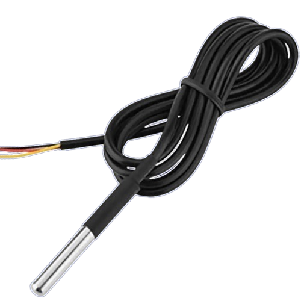
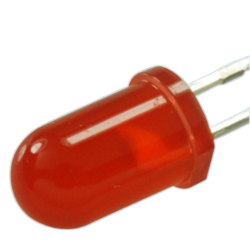
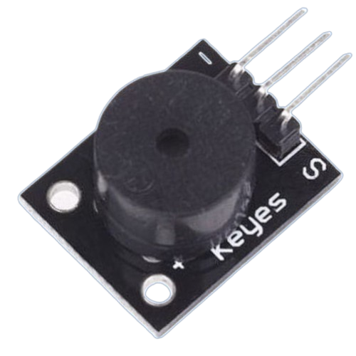
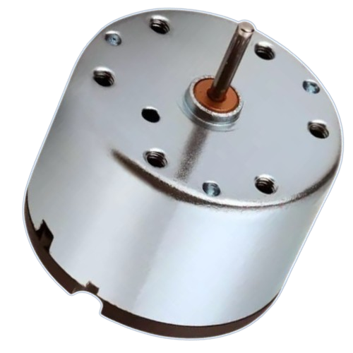
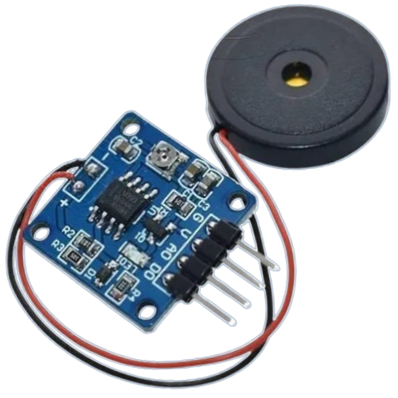

Plataforma ExpeRT
Inovação, automação e suporte tecnológico para transformar a aprendizagem prática de Ciências da Natureza e Matemática.
Nossa História e Evolução
2016 — Concepção e Primeira Versão (SVD)
Integração Java/Arduino e Visualização de Dados
A Plataforma ExpeRT nasceu para enfrentar um desafio recorrente na educação básica: a escassez de laboratórios equipados e a carência de ferramentas acessíveis para a realização de experimentos práticos nas disciplinas de Ciências da Natureza e Matemática.
A solução inicial consistiu no desenvolvimento do Sistema de Visualização de Dados (SVD) em linguagem Java, integrado diretamente à plataforma de prototipagem Arduino. Esse sistema pioneiro permitia conectar sensores de baixo custo — como o sensor de temperatura LM35 e o sensor ultrassônico de distância HC-SR04 — para capturar variáveis físicas e gerar gráficos em tempo real no computador. Com isso, alunos e professores puderam transformar aulas teóricas em investigações científicas dinâmicas e visuais.
2020 — Consolidação e Portal Web
Aprimoramento Pedagógico e Distribuição Web
Com a aplicação prática do SVD em ambientes escolares, surgiram novas demandas pedagógicas e técnicas. O software em Java foi continuamente atualizado para oferecer maior controle aos professores durante as práticas experimentais, incluindo a possibilidade de configurar a taxa de amostragem (frequência com que as leituras são feitas) e alternar instantaneamente a exibição dos dados entre gráficos contínuos e tabelas numéricas.
Nessa mesma fase, lançou-se um portal web dedicado para centralizar a distribuição do sistema, disponibilizar guias práticos, roteiros de apoio pedagógico e estabelecer um canal direto de comunicação com os educadores da rede pública de ensino.
2026 — Reformulação Tecnológica e Arquitetura Moderna
Ecossistema Web/Desktop Multiplataforma e Execução Offline
Em 2026, a plataforma passou por uma reconstrução estrutural completa para se adequar às exigências de infraestrutura moderna das escolas. Migrou-se a arquitetura legada para tecnologias Web avançadas empacotadas para execução nativa em desktop, eliminando dependências pesadas de instalação e garantindo funcionamento 100% offline em computadores escolares.
A versão atual oferece suporte a um conjunto expandido de sensores, mecanismo de exportação de dados brutos (para análise posterior em planilhas ou softwares estatísticos), interface responsiva com alto contraste e gráficos interativos de altíssima precisão.
Sensores e componentes
Conheça alguns dos componentes que podem fazer parte das atividades experimentais da plataforma.

Distância

Pisca LED

Luminosidade

Buzzer

Sensor Hall

Motor CC

Servo Motor

Piezoelétrico
Sobre Nós (Desenvolvedores e Mentores)
Conheça as pessoas que criaram, aprimoraram e orientam a Plataforma ExpeRT.
Desenvolvedores (2016)
Co-Fundadoras da Plataforma
- Helena Borges Daré
- Vitória Rodrigues dos Santos
Desenvolvedores (2020)
Aprimoramento SVD e Portal Web
- Eduardo Marmitt
- Mariangela Mendes Recco
Desenvolvedores (2026)
Reformulação Web/Desktop
- Arthur Correa Pacheco
- Laura Bitencourt Silveira
Corpo docente e orientação
Prof. Me. Helmo Alan Batista de Araújo
Orientador / Idealizador
helmo.araujo@ifc.edu.br
Prof. Matheus Lorenzato Braga
Coorientador
mateus.braga@ifc.edu.br
Marcos Antonio Silvera de Santos
Coorientador
marco.souza@ifc.edu.br
Instituição de Origem
A Plataforma ExpeRT é desenvolvida e mantida no Instituto Federal de Educação, Ciência e Tecnologia Catarinense (IFC) – Campus Sombrio. Trata-se de um projeto de pesquisa focado em soluções computacionais aplicadas ao ensino didático de ciências.